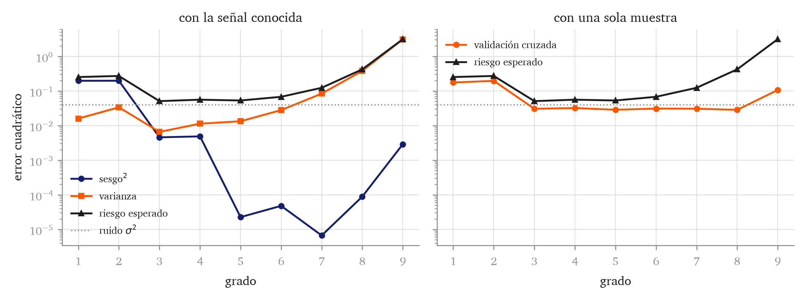
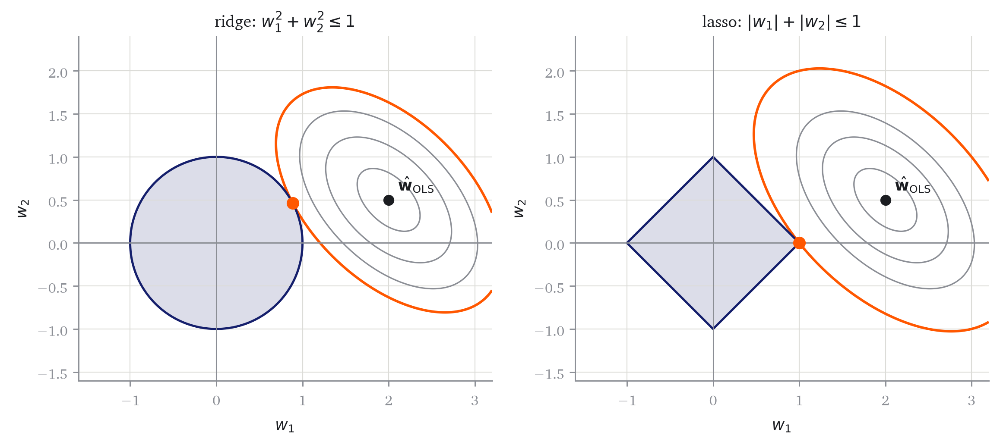
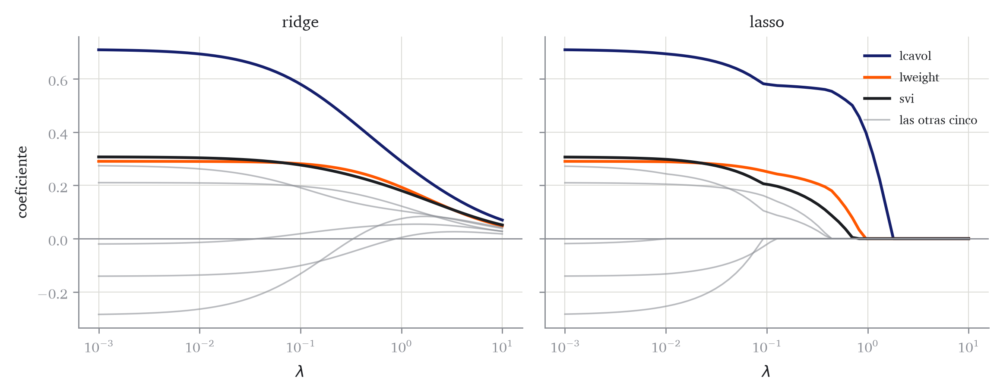
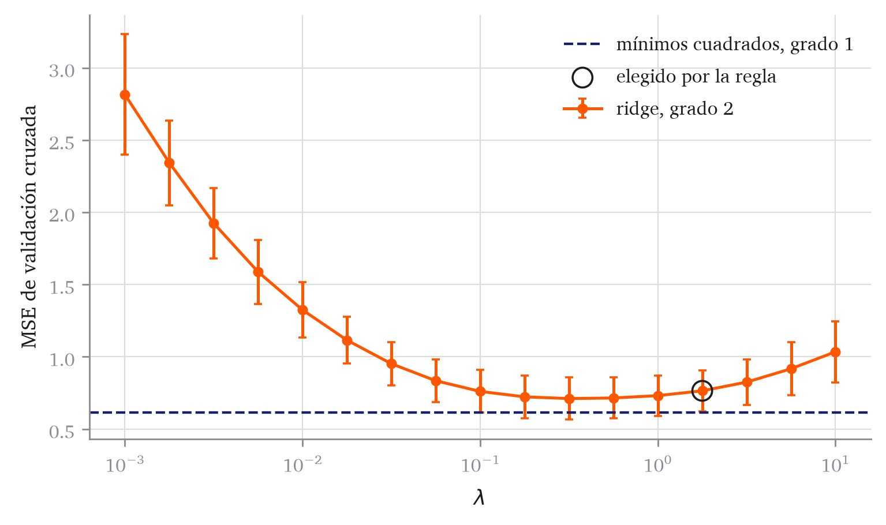

El capítulo anterior terminó con una limitación del modelo: es lineal en las columnas preprocesadas. Una plaza adicional cambia el precio predicho en la misma cantidad sea cual sea el tamaño o el tipo de la vivienda, y una relación no lineal entre una variable predictora y la respuesta solo se puede aproximar con una recta.
Para medir el efecto de esa limitación usaremos datos simulados, porque así conocemos la señal y podemos estimar con la precisión que queramos el riesgo verdadero de cualquier modelo ajustado. La señal es \(f(x)=\sin(\pi x)\) en \([0,2]\), y la respuesta es \(y=f(x)+\varepsilon\), con \(x\) siguiendo una distribución uniforme en \([0,2]\) y un ruido normal de media cero y desviación típica \(\sigma=0.2\), independiente de \(x\).
El riesgo verdadero de un modelo \(g\) ya ajustado es su pérdida cuadrática esperada sobre una observación nueva:
donde, como en Definición 2.3, el subíndice indica que la esperanza se toma sobre una observación nueva \((X,Y)\) extraída de la distribución generadora \(P^\star\), con \(g\) fijo. El resultado siguiente descompone este riesgo en dos términos: la varianza del ruido y la distancia media entre la señal y el modelo.
Lema 6.1 (Riesgo verdadero de un modelo fijo) Sea \(Y=f(X)+\varepsilon\), con un ruido \(\varepsilon\) de media cero y varianza \(\sigma^2\), independiente de \(X\). Para cualquier modelo \(g\) fijado sin usar el par \((X,Y)\),
Tomamos esperanzas sobre \(P^\star\) término a término. La del primero es \(\mathbb{E}_{P^\star}\!\left[ \varepsilon^2 \right]=\sigma^2\), porque \(\varepsilon\) tiene media cero. La del segundo es nula: \(\varepsilon\) es independiente de \(X\), así que la esperanza del producto es el producto de las esperanzas, y \(\mathbb{E}_{P^\star}\!\left[ \varepsilon \right]=0\). El tercer término no es negativo, y su esperanza tampoco.
El primer sumando no depende del modelo: ningún modelo tiene un riesgo verdadero menor que \(\sigma^2\), el suelo de ruido del capítulo 2, que en nuestro ejemplo vale 0.04. El segundo es la distancia media entre el modelo y la señal, y es la única parte del riesgo que un ajuste mejor puede reducir.
En la simulación conocemos \(P^\star\), así que podemos generar tantas observaciones nuevas como queramos. Para estimar el riesgo verdadero de un modelo generamos un millón de observaciones nuevas y calculamos en ellas su error cuadrático medio: es un conjunto de test de un millón de observaciones, y por Teorema 4.1 esa media estima el riesgo sin sesgo. Con un millón de observaciones, su error típico es muy pequeño: 0.0003 para la recta.
Generamos 36 observaciones y ajustamos una recta por mínimos cuadrados.
Un millón de observaciones nuevas del mismo modelo generador, generadas una sola vez: todos los modelos se evalúan en las mismas, de modo que las diferencias entre ellos no dependen del muestreo. x[:, None] convierte el vector en una tabla de una columna, que es lo que espera scikit-learn.
2
Para la recta calculamos las pérdidas fuera de la función, porque además de su media queremos su error típico, como en el capítulo 4.
Riesgo verdadero de la recta, 36 observaciones: 0.2379 (error típico 0.0003)
Riesgo verdadero de la recta, 36000 observaciones: 0.2360
La recta ajustada con 36 observaciones tiene un riesgo verdadero de 0.2379, seis veces el suelo de ruido. Con 36000 observaciones su riesgo es 0.2360: aumentar la muestra apenas reduce este error, porque ninguna recta se acerca a la señal (Figura 6.1).
Figura 6.1: Las 36 observaciones simuladas, la señal y la recta ajustada por mínimos cuadrados. La señal sube hasta \(x=0.5\), baja hasta \(x=1.5\) y vuelve a subir, y una recta no puede seguir esos cambios de tendencia.
El objetivo de este capítulo es ampliar la clase de hipótesis para aprender relaciones no lineales y controlar el sobreajuste que produce esa ampliación. Para ello:
construimos modelos lineales en columnas nuevas, las características, que se ajustan con los mínimos cuadrados del capítulo 3;
descomponemos el error de predicción en ruido, sesgo y varianza, para explicar por qué un modelo demasiado flexible predice peor;
elegimos la complejidad del modelo con la validación cruzada del capítulo 4;
controlamos la complejidad sin quitar columnas, penalizando el tamaño de los coeficientes: las regresiones ridge y lasso.
Modelos lineales en características
Hasta ahora, cada columna de la matriz de diseño era una variable predictora, preprocesada o no. También podemos construir columnas nuevas como funciones de las variables predictoras y ajustar un modelo lineal en ellas.
Definición 6.1 (Mapa de características) Un mapa de características es una función \(\boldsymbol{\varphi}:\mathbb{R}^{p}\to\mathbb{R}^{d}\) que transforma el vector de variables predictoras \(\mathbf{x}\) en \(d\)características, \(\boldsymbol{\varphi}(\mathbf{x})=\bigl(\varphi_1(\mathbf{x}),\ldots,\varphi_{d}(\mathbf{x})\bigr)^{\mathsf{T}}\). El modelo lineal en las características es
y su matriz de diseño \(\boldsymbol{\Phi}\in\mathbb{R}^{n\times(d+1)}\) tiene por fila \(i\) el vector \(\bigl(1,\boldsymbol{\varphi}(\mathbf{x}_i)^{\mathsf{T}}\bigr)\).
El modelo de Ecuación 6.2 puede ser no lineal en \(\mathbf{x}\), pero es lineal en los coeficientes, y esa es la propiedad que usa el ajuste por mínimos cuadrados.
Proposición 6.1 (Ajuste por mínimos cuadrados con características) El riesgo cuadrático empírico del modelo Ecuación 6.2 es \(\hat{R}(\boldsymbol{w})=\frac{1}{n}\left\lVert \boldsymbol{\Phi}\boldsymbol{w}-\mathbf{y} \right\rVert^2\). Sus ecuaciones normales son \(\boldsymbol{\Phi}^{\mathsf{T}}\boldsymbol{\Phi}\boldsymbol{w}=\boldsymbol{\Phi}^{\mathsf{T}}\mathbf{y}\), y el ajuste es único si y solo si \(\mathop{\mathrm{rank}}\boldsymbol{\Phi}=d+1\).
Demostración. La predicción de la observación \(i\) es el producto de la fila \(i\) de \(\boldsymbol{\Phi}\) por \(\boldsymbol{w}\), de modo que el riesgo es el de Proposición 3.1 con \(\boldsymbol{\Phi}\) en el lugar de \(\mathbf{X}\). Las demostraciones de Teorema 3.1 y de Teorema 3.2 solo usan que las entradas de la matriz de diseño son números fijos una vez observada la muestra. Las características lo son, porque \(\boldsymbol{\varphi}\) no depende de \(\boldsymbol{w}\), así que los dos resultados se aplican con \(\boldsymbol{\Phi}\) en lugar de \(\mathbf{X}\) y \(d\) en lugar de \(p\).
No hace falta, por tanto, un algoritmo nuevo: basta con construir \(\boldsymbol{\Phi}\) y ajustar LinearRegression sobre sus columnas.
Características polinómicas
Con una sola variable predictora, el mapa más sencillo toma sus potencias hasta un grado \(d\):
El modelo es un polinomio de grado \(d\), con \(d+1\) coeficientes. El grado mide la complejidad del modelo: todo polinomio de grado \(d\) es un polinomio de grado \(d+1\) con el último coeficiente nulo, así que al subir el grado la clase de hipótesis crece. En consecuencia, el riesgo en train del ajuste no puede aumentar al subir el grado, porque el mínimo sobre una clase es menor o igual que el mínimo sobre cualquier clase contenida en ella.
Implementación en scikit-learn.PolynomialFeatures(grado, include_bias=False) es un transformador (Definición 5.3) que construye las columnas \(x,x^2,\ldots,x^{d}\). Con include_bias=False no añade la columna de unos, porque LinearRegression estima el intercepto. Antes de elevar \(x\) a potencias la estandarizamos: las potencias de un número entre 0 y 2 llegan a \(2^9=512\), sus columnas son casi proporcionales y el cálculo de los coeficientes pierde precisión. Estandarizar no cambia la clase de hipótesis, porque un polinomio de grado \(d\) en \((x-\bar x)/s_x\) es un polinomio del mismo grado en \(x\), y viceversa.
Ajustamos los grados 1, 3 y 9 con las 36 observaciones y comparamos el riesgo en train con el riesgo verdadero:
print(f"{'grado':>5}{'riesgo en train':>16}{'riesgo verdadero':>17}")for grado in (1, 3, 9): modelo = crear_polinomio(grado).fit(x[:, None], y) en_train = np.mean((y - modelo.predict(x[:, None])) **2)print(f"{grado:5d}{en_train:16.4f}{riesgo_verdadero(modelo):17.4f}")
grado riesgo en train riesgo verdadero
1 0.1538 0.2379
3 0.0217 0.0545
9 0.0146 0.0788
El riesgo en train baja al subir el grado, de 0.1538 con la recta a 0.0146 con el grado 9. El riesgo verdadero baja de 0.2379 a 0.0545 con el grado 3 y vuelve a subir a 0.0788 con el grado 9 (Figura 6.2): el polinomio de grado 9 pasa más cerca de las 36 observaciones y más lejos de la señal. Es el sobreajuste de Definición 1.2, ahora con un número que controla la complejidad.
Figura 6.2: Polinomios de grado 1, 3 y 9 ajustados con las mismas 36 observaciones. La recta no se curva; el grado 3 sigue la señal; el grado 9 sigue también parte del ruido.
Interacciones
Con varias variables predictoras, el mapa polinómico de grado 2 contiene las variables, sus cuadrados y los productos de cada par de variables distintas. Con dos variables,
El producto \(x_1x_2\) es una interacción: hace que el efecto de \(x_1\) sobre la predicción dependa del valor de \(x_2\). En el modelo \(w_0+w_1x_1+w_2x_2+w_3x_1x_2\), aumentar \(x_1\) en una unidad cambia la predicción en \(w_1+w_3x_2\) (Figura 6.3). En los anuncios de Airbnb del capítulo 5, el producto de accommodates por la indicadora de habitación privada permitiría que una plaza adicional cambiara el precio predicho de forma distinta en una habitación privada y en una vivienda completa.
Figura 6.3: Predicción de \(w_0+w_1x_1+w_2x_2+w_3x_1x_2\) frente a \(x_1\) para dos valores de \(x_2\), con \(w_0=0.5\), \(w_1=1\) y \(w_2=0.4\). Sin interacción las rectas son paralelas; con ella, sus pendientes son \(w_1\) y \(w_1+w_3\).
El número de columnas crece deprisa con el número de variables. Con \(p\) variables, el grado 2 tiene \(p\) columnas de grado 1, \(p\) cuadrados y \(p(p-1)/2\) productos de pares distintos: en total, \(p(p+3)/2\) columnas. Con las ocho variables de los datos de próstata del capítulo 4 son 44 columnas para 67 observaciones de train. Cada columna añade un coeficiente que se estima con las mismas observaciones; volveremos a este caso en la última sección.
Ejercicio 6.1 Tres observaciones tienen \(x=(-1,0,2)\) e \(y=(2,0,2)\).
Escribe la matriz de diseño \(\boldsymbol{\Phi}\) del modelo polinómico de grado 2, con la columna de unos.
Resuelve \(\boldsymbol{\Phi}\boldsymbol{w}=\mathbf{y}\) y calcula el riesgo en train de esos coeficientes. Justifica con Proposición 6.1 que son el ajuste por mínimos cuadrados.
Añadimos una cuarta observación, \(x=1\) e \(y=1\). Sin calcular el nuevo ajuste, razona si su riesgo en train puede ser cero con grado 2 y con grado 3.
En el modelo \(w_0+w_1x_1+w_2x_2+w_3x_1x_2\), calcula cuánto cambia la predicción al pasar de \(x_1=0\) a \(x_1=1\) cuando \(x_2=0\) y cuando \(x_2=2\).
Sesgo, varianza y ruido
El polinomio de grado 9 predice peor que el de grado 3, aunque su clase de hipótesis contiene a la del grado 3. Para entender por qué, hay que estudiar el procedimiento de ajuste y no un único modelo ajustado: con otra muestra de 36 observaciones, el mismo procedimiento produciría otro polinomio.
Simulamos 2000 muestras de 36 observaciones del mismo modelo generador, ajustamos con cada una los polinomios de grado 1 a 9 y guardamos sus predicciones en una rejilla de valores de \(x\).
Código
rejilla = np.linspace(0, 2, 400)REPETICIONES =20001def muchos_ajustes(grado, n=36, semilla=0): torch.manual_seed(semilla)def potencias(v):return np.column_stack([(v -1) ** j for j inrange(grado +1)]) P = np.empty((REPETICIONES, len(rejilla)))for r inrange(REPETICIONES): x_r = (torch.rand(n) *2).numpy() y_r = senal(x_r) + RUIDO * torch.randn(n).numpy() w = np.linalg.lstsq(potencias(x_r), y_r, rcond=None)[0] P[r] = potencias(rejilla) @ wreturn Pajustes = {grado: muchos_ajustes(grado) for grado inrange(1, 10)}
1
La fila r de P contiene las predicciones en la rejilla del polinomio ajustado con la muestra r. Todos los grados usan las mismas 2000 muestras. Para que la simulación tarde menos de un segundo, los mínimos cuadrados se resuelven directamente sobre las potencias de \(x-1\), que generan los mismos polinomios que crear_polinomio y dan el mismo ajuste.
En Figura 6.4 aparecen cien de los dos mil ajustes de grado 1, 3 y 9. Con grado 1, las rectas apenas cambian de una muestra a otra, pero su promedio está lejos de la señal. Con grado 9, el promedio está cerca de la señal, pero cada curva se aleja de él. Con grado 3, las dos distancias son pequeñas.
Figura 6.4: Cien de los dos mil polinomios ajustados con muestras distintas de 36 observaciones, para tres grados. La curva gruesa es el promedio de los dos mil ajustes.
Para separar esas dos distancias fijamos un punto \(\mathbf{x}\). La muestra de entrenamiento \(\mathcal{D}\) es aleatoria, y también lo es la predicción \(\hat{f}_{\mathcal{D}}(\mathbf{x})\) del modelo ajustado con ella. Su esperanza sobre las muestras de tamaño \(n\) es el modelo medio,
que corresponde a la curva gruesa de Figura 6.4. No se puede calcular con una sola muestra, porque requiere todas las muestras posibles. La observación que queremos predecir en \(\mathbf{x}\) es \(Y=f(\mathbf{x})+\varepsilon\), con un ruido \(\varepsilon\) que no pertenece a \(\mathcal{D}\).
El resultado siguiente usa tres supuestos:
la pérdida es cuadrática;
el procedimiento de ajuste es una función determinista de \(\mathcal{D}\), de modo que toda la aleatoriedad de \(\hat{f}_{\mathcal{D}}\) procede de la muestra;
el ruido \(\varepsilon\) de la observación futura tiene media cero y varianza \(\sigma^2\), y es independiente de \(\mathcal{D}\).
Teorema 6.1 (Descomposición del error en ruido, sesgo y varianza) Fijado \(\mathbf{x}\), bajo los tres supuestos anteriores,
Demostración. Escribimos \(\hat{f}=\hat{f}_{\mathcal{D}}(\mathbf{x})\), \(f=f(\mathbf{x})\) y \(\bar{\hat{f}}=\bar{\hat{f}}(\mathbf{x})\). Sumando y restando \(\bar{\hat{f}}\),
En la primera igualdad, \(f\) y \(\bar{\hat{f}}\) son constantes una vez fijado \(\mathbf{x}\); en la segunda, \(\varepsilon\) y \(\mathcal{D}\) son independientes; en la tercera, \(\mathbb{E}_{\mathcal{D}}\!\left[ \hat{f} \right]=\bar{\hat{f}}\) por Ecuación 6.4. Quedan las esperanzas de los tres cuadrados: \(\mathbb{E}_{\varepsilon}\!\left[ \varepsilon^2 \right]=\sigma^2\) porque \(\varepsilon\) tiene media cero, \((f-\bar{\hat{f}})^2\) es una constante y la esperanza del tercero es la varianza.
El error cuadrático esperado en \(\mathbf{x}\) tiene, por tanto, tres componentes:
El ruido, \(\sigma^2\), no depende del procedimiento: es el suelo de Lema 6.1.
El sesgo al cuadrado es la distancia entre la señal y el modelo medio. Depende sobre todo de la clase de hipótesis: si ninguna función de la clase se acerca a la señal, tampoco lo hace su promedio. Con más observaciones el modelo medio se acerca a la mejor función de la clase, pero no más allá: la recta de Figura 6.1 tenía un riesgo de 0.2360 con 36000 observaciones.
La varianza mide cuánto se alejan los modelos ajustados de su promedio por la muestra concreta que reciben. En el experimento crece con el grado, porque con más coeficientes el ajuste sigue también el ruido de cada muestra, y disminuye al aumentar la muestra.
Para un modelo fijo \(g\), que no depende de la muestra, la varianza es nula y el sesgo es \(f(\mathbf{x})-g(\mathbf{x})\): promediando sobre los valores de \(x\) se recupera Lema 6.1.
La identidad vale en cada punto. Promediando sus términos sobre los valores de \(x\) se obtienen el sesgo al cuadrado y la varianza medios, y su suma más \(\sigma^2\) es el error cuadrático esperado del procedimiento en una observación nueva, que llamaremos riesgo esperado.
NotaAmpliación no exigible: el riesgo esperado del procedimiento
Si \(X\) es la variable predictora de una observación nueva, promediar Ecuación 6.5 sobre la distribución de \(X\), con Lema 3, da
donde \(\bar{R}_{n}\) es el riesgo esperado del procedimiento de Definición 4.4. En la simulación, \(X\) es uniforme en \([0,2]\) y las dos esperanzas sobre \(X\) se aproximan promediando sobre la rejilla.
La función siguiente traduce Ecuación 6.5 a código. Recibe la matriz P de predicciones, con una fila por muestra y una columna por punto de la rejilla, y devuelve el sesgo al cuadrado y la varianza promediados sobre la rejilla.
El sesgo al cuadrado baja de 0.1980 con grado 1 a 0.0046 con grado 3, y entre los grados 5 y 8 es prácticamente nulo: un polinomio de grado 3 puede cambiar de tendencia dos veces, como la señal. El grado 2 no mejora al 1 porque la señal cumple \(f(2-x)=-f(x)\), y un término cuadrático en \(x-1\) no ayuda a aproximar una función con esa simetría. La varianza crece de 0.0066 con grado 3 a 3.1114 con grado 9. El riesgo esperado, su suma más el ruido, es mínimo en el grado 3, con 0.0512, y su gráfica frente al grado tiene forma de U (Figura 6.5, izquierda): a la izquierda del mínimo domina el sesgo y a la derecha, la varianza.
Ejercicio 6.2 En un punto \(x_0\), la respuesta de una observación nueva es \(Y=f(x_0)+\varepsilon\), con \(f(x_0)=1\) y un ruido \(\varepsilon\) de media cero y varianza \(\sigma^2=0.04\). Un procedimiento se ajusta con una muestra de entrenamiento \(\mathcal{D}\) y predice \(\hat{f}_{\mathcal{D}}(x_0)\) en \(x_0\). Supón que solo hay cuatro muestras posibles, igualmente probables, y que con ellas el procedimiento predice \(0.6\), \(0.8\), \(1.0\) y \(1.2\).
Hay dos cantidades distintas, según se fije o no la muestra de entrenamiento:
Error de un modelo fijo. Fijada la muestra \(\mathcal{D}\), el modelo ajustado es fijo, y su error en \(x_0\) es la esperanza sobre el ruido de la observación nueva, \[
\mathbb{E}_{\varepsilon}\!\left[ \bigl(Y-\hat{f}_{\mathcal{D}}(x_0)\bigr)^2 \right] .
\] Es la cantidad que estima el error de test de los capítulos anteriores. Con \(m\) observaciones nuevas en \(x_0\), de respuestas \(y_1,\ldots,y_m\), el error de test es \[
\hat{R}_{\mathcal{D}_{\mathrm{test}}}=\frac{1}{m}\sum_{i=1}^{m}\bigl(y_i-\hat{f}_{\mathcal{D}}(x_0)\bigr)^2 ,
\] y, por el argumento de Teorema 4.1, su esperanza es el error del modelo fijo.
Error esperado del procedimiento. Es el error anterior promediado sobre las muestras de entrenamiento, \[
\mathbb{E}_{\mathcal{D},\varepsilon}\!\left[ \bigl(Y-\hat{f}_{\mathcal{D}}(x_0)\bigr)^2 \right]
=\mathbb{E}_{\mathcal{D}}\!\left[ \mathbb{E}_{\varepsilon}\!\left[ \bigl(Y-\hat{f}_{\mathcal{D}}(x_0)\bigr)^2 \right] \right] ,
\] el lado izquierdo de Ecuación 6.5. Para estimarlo hacen falta muchas muestras de entrenamiento, como en la simulación del capítulo: se ajusta el procedimiento con cada una, se calcula el error de test de cada modelo y se promedian. Con datos reales solo hay una muestra, y la validación cruzada sustituye esas muestras por los bloques de ajuste de cada vuelta.
Demuestra que el error del modelo fijo es \(\bigl(f(x_0)-\hat{f}_{\mathcal{D}}(x_0)\bigr)^2+\sigma^2\) y calcúlalo para cada una de las cuatro muestras. ¿Por qué no es cero para la muestra que predice \(1.0\), que coincide con la señal?
Se observan cuatro respuestas nuevas en \(x_0\): \(1.2\), \(0.8\), \(1.1\) y \(0.9\). Calcula el error de test del modelo que predice \(0.8\) y compáralo con su error del apartado a. ¿Por qué no coinciden?
Calcula el error esperado del procedimiento promediando los cuatro errores del apartado a. Calcula después el modelo medio, el sesgo al cuadrado y la varianza, y comprueba con Ecuación 6.5 que su suma más \(\sigma^2\) da el mismo valor.
Un procedimiento más rígido, ajustado con las mismas muestras, predice \(0.7\), \(0.8\), \(0.8\) y \(0.9\). Calcula sus tres términos y su error esperado. ¿Cuál de los dos procedimientos predice mejor en \(x_0\) y qué término lo explica?
Si las muestras de entrenamiento tuvieran el doble de observaciones, ¿qué término esperarías que disminuyera en el primer procedimiento? Justifica la respuesta.
Elegir la complejidad con validación cruzada
La tabla anterior requiere conocer la señal y dos mil muestras. Con datos reales tenemos una sola muestra. La validación cruzada de Definición 4.5 estima con ella el riesgo de cada grado: en cada vuelta ajusta el pipeline con cuatro bloques y lo evalúa en el quinto, como en el capítulo 5.
from sklearn.model_selection import KFoldparticion = KFold(n_splits=5, shuffle=True, random_state=9)bloques_sim =list(particion.split(x))def riesgos_cv(grado): riesgos = []for i_ajuste, i_val in bloques_sim: modelo = crear_polinomio(grado) modelo.fit(x[i_ajuste, None], y[i_ajuste]) prediccion = modelo.predict(x[i_val, None]) riesgos.append(np.mean((y[i_val] - prediccion) **2))return np.array(riesgos)grados =list(range(1, 10))riesgos_grado = [riesgos_cv(grado) for grado in grados]print(f"{'grado':>5}{'CV':>8}{'ee':>7}{'riesgo esperado':>16}")for grado, r inzip(grados, riesgos_grado): ee = r.std(ddof=1) / np.sqrt(len(r))print(f"{grado:5d}{r.mean():8.4f}{ee:7.4f}{terminos[grado][2]:16.4f}")
La estimación de validación cruzada separa los grados 1 y 2 del resto. Entre los grados 3 y 8, en cambio, toma valores entre 0.0286 y 0.0323, y su mínimo cae en el grado 8, cuyo riesgo esperado es 0.4239 (Figura 6.5, derecha). Los grados altos tienen un riesgo esperado alto porque, con algunas muestras, el polinomio se dispara en los huecos entre observaciones (Figura 6.4). Con esta muestra eso no ocurre en ninguna vuelta hasta el grado 9, y la validación cruzada no lo puede ver. Además, por Proposición 4.3, el mínimo de nueve estimaciones con error es optimista.
Código
fig, ax = plt.subplots(1, 2, figsize=(9, 3.4), sharey=True)ax[0].plot(grados, [terminos[g][0] for g in grados], marker="o", ms=4, color=AZUL, label="sesgo$^2$")ax[0].plot(grados, [terminos[g][1] for g in grados], marker="s", ms=4, color=NARANJA, label="varianza")ax[0].plot(grados, [terminos[g][2] for g in grados], marker="^", ms=4, color=TINTA, label="riesgo esperado")ax[0].axhline(RUIDO **2, color=GRIS, lw=1, linestyle=":", label=r"ruido $\sigma^2$")ax[0].set(xlabel="grado", ylabel="error cuadrático", yscale="log", title="con la señal conocida")ax[0].legend(fontsize=8)ax[1].plot(grados, [r.mean() for r in riesgos_grado], marker="o", ms=4, color=NARANJA, label="validación cruzada")ax[1].plot(grados, [terminos[g][2] for g in grados], marker="^", ms=4, color=TINTA, label="riesgo esperado")ax[1].axhline(RUIDO **2, color=GRIS, lw=1, linestyle=":")ax[1].set(xlabel="grado", yscale="log", title="con una sola muestra")ax[1].legend(fontsize=8)plt.tight_layout()

Figura 6.5: A la izquierda, la descomposición del riesgo esperado: a la izquierda del mínimo domina el sesgo y a la derecha, la varianza. A la derecha, la estimación de validación cruzada con una sola muestra de 36 observaciones, que solo ve la subida en el grado 9. Escala logarítmica en el eje vertical. El sesgo al cuadrado estimado del grado 9 incluye el error de promediar dos mil curvas muy dispersas.
La regla de un error típico de Definición 4.6 cambia la decisión. Ordenamos los candidatos de más sencillo a más complejo, aquí por grado, e identificamos al campeón, el de menor estimación. Después elegimos el candidato más sencillo cuya desventaja frente al campeón no supere un error típico de la diferencia emparejada.
1def regla_un_error_tipico(riesgos): campeon =int(np.argmin([r.mean() for r in riesgos]))for k inrange(campeon): diferencias = riesgos[k] - riesgos[campeon] ee = diferencias.std(ddof=1) / np.sqrt(len(diferencias))if diferencias.mean() <= ee:return campeon, kreturn campeon, campeoncampeon, elegido = regla_un_error_tipico(riesgos_grado)d = riesgos_grado[elegido] - riesgos_grado[campeon]print(f"Campeón: grado {grados[campeon]}. Elegido: grado {grados[elegido]}")print(f"Desventaja del elegido: {d.mean():.4f}; "f"error típico: {d.std(ddof=1) / np.sqrt(len(d)):.4f}")print(f"Riesgo esperado del campeón y del elegido: "f"{terminos[grados[campeon]][2]:.4f} y "f"{terminos[grados[elegido]][2]:.4f}")
1
riesgos es la lista de los riesgos por bloque de cada candidato, ordenada del más sencillo al más complejo. La función devuelve las posiciones del campeón y del elegido.
Campeón: grado 8. Elegido: grado 3
Desventaja del elegido: 0.0022; error típico: 0.0045
Riesgo esperado del campeón y del elegido: 0.4239 y 0.0512
El campeón es el grado 8. El grado 3 es el primero cuya desventaja, 0.0022, no supera su error típico, 0.0045, y la regla lo elige. Su riesgo esperado, 0.0512, es el menor de la tabla, frente a 0.4239 del campeón.
La regla es una heurística, y ningún resultado garantiza que elija el candidato de menor riesgo esperado. Con otras 40 particiones en cinco bloques de las mismas 36 observaciones, elige el grado 3 en 27, el grado 4 en 10 y un grado mayor en las 3 restantes.
Código
elecciones = {}for semilla inrange(40): otros =list(KFold(n_splits=5, shuffle=True, random_state=semilla).split(x)) riesgos_otra = []for grado in grados: riesgos = []for i_ajuste, i_val in otros: modelo = crear_polinomio(grado) modelo.fit(x[i_ajuste, None], y[i_ajuste]) prediccion = modelo.predict(x[i_val, None]) riesgos.append(np.mean((y[i_val] - prediccion) **2)) riesgos_otra.append(np.array(riesgos)) g = grados[regla_un_error_tipico(riesgos_otra)[1]] elecciones[g] = elecciones.get(g, 0) +1print("Grado elegido en 40 particiones:", dict(sorted(elecciones.items())))
Grado elegido en 40 particiones: {3: 27, 4: 10, 5: 1, 6: 1, 8: 1}
El grado es un mando discreto: entre dos grados consecutivos no hay modelos intermedios. Con una variable, el salto de un grado al siguiente añade una columna; con las ocho variables de próstata, el paso del grado 1 al 2 pasa de 8 columnas a 44. La sección siguiente controla la complejidad de otra forma: conserva todas las columnas y penaliza el tamaño de los coeficientes.
Regularización
Hasta ahora, para reducir la varianza hemos quitado columnas. La regularización las conserva y añade al riesgo empírico un término que crece con el tamaño de los coeficientes. Un ajuste que reduzca el riesgo en train con coeficientes grandes paga ese término, de modo que el ajuste regularizado sigue menos el ruido de la muestra.
Definición 6.2 (Regresión ridge) Sea \(\lambda\geq0\). El riesgo penalizado de ridge de un modelo lineal con intercepto \(w_0\) y coeficientes \(w_1,\ldots,w_{d}\) es
donde \(\hat{R}\) es el riesgo cuadrático empírico. La regresión ridge toma como ajuste el minimizador \(\hat{\boldsymbol{w}}_{\lambda}\) de \(\hat{R}_{\lambda}\).
Con \(\lambda=0\), ridge es el ajuste por mínimos cuadrados. El intercepto \(w_0\) no se penaliza, porque fija el nivel de las predicciones y no hay ningún motivo para acercarlo a cero. Si la respuesta fuera una temperatura y pasáramos de grados Celsius a kelvin, todas las respuestas aumentarían en 273.15, y las predicciones deberían aumentar en la misma cantidad. Con el intercepto penalizado aumentarían menos, como muestra el apartado d de Ejercicio 6.3.
Penalizar el tamaño de los coeficientes reduce la varianza porque, en un modelo demasiado flexible, la varianza procede de coeficientes grandes que se compensan entre sí. Con las nueve columnas del grado 9 estandarizadas, \(z^5\), \(z^7\) y \(z^9\) son casi proporcionales, con correlaciones entre 0.977 y 0.996, y mínimos cuadrados les asigna en la muestra del capítulo los coeficientes \(-10.7\), \(12.7\) y \(-6.0\). Sus contribuciones casi se cancelan, y lo que queda sigue a cada observación. Con otra muestra, la cancelación es distinta y la curva cambia: es la varianza de Figura 6.4. En el riesgo penalizado, un coeficiente grande solo compensa si reduce mucho el riesgo en train, y esas cancelaciones no lo hacen. Con \(\lambda=0.01\), ningún coeficiente pasa de 0.98 en valor absoluto.
\(\lambda\) es un hiperparámetro: un número que fija el procedimiento antes del ajuste y que no se estima minimizando el riesgo en train, porque ese criterio daría siempre \(\lambda=0\). El grado del polinomio también es un hiperparámetro, y los dos se eligen con validación cruzada.
Advertenciaλ, α y alpha
En el curso, \(\lambda\) es el peso de la penalización y \(\alpha\), la tasa de aprendizaje del descenso de gradiente. scikit-learn llama alpha al peso de la penalización y, además, lo define sobre otra escala del criterio, como veremos al implementarlo.
Ridge con un coeficiente
Empezamos por una sola variable predictora, estandarizada en train, de modo que \(\frac{1}{n}\sum_ix_i=0\) y \(\frac{1}{n}\sum_ix_i^2=1\).
Proposición 6.2 (Ridge con una variable estandarizada) Sea \(x\) una variable con \(\frac{1}{n}\sum_ix_i=0\) y \(\frac{1}{n}\sum_ix_i^2=1\), y sea \(c=\frac{1}{n}\sum_ix_iy_i\). Para todo \(\lambda\geq0\), el riesgo penalizado
tiene un único minimizador, con \(\hat w_0=\bar{y}\) y \(\hat w_{\lambda}=c/(1+\lambda)\). En particular, la pendiente de mínimos cuadrados es \(\hat w_{\mathrm{OLS}}=c\), y
Ejercicio 6.3 Demuestra Proposición 6.2. Asume, como en su enunciado, que \(x\) está estandarizada: \(\frac{1}{n}\sum_ix_i=0\) y \(\frac{1}{n}\sum_ix_i^2=1\).
Calcula las derivadas parciales de \(\hat{R}_{\lambda}(w_0,w)\) respecto de \(w_0\) y de \(w\), y simplifícalas con esas dos igualdades.
Iguálalas a cero y resuelve el sistema. Comprueba que se obtiene \(\hat w_0=\bar{y}\) y \(\hat w_{\lambda}=c/(1+\lambda)\).
Comprueba que \[
\hat{R}_{\lambda}(w_0,w)=(\bar{y}-w_0)^2
+\frac{1}{n}\sum_{i=1}^{n}(y_i-\bar{y})^2-2cw+(1+\lambda)w^2
\] y deduce que el punto del apartado b es el único mínimo. Pista: escribe \(y_i-w_0-wx_i=(y_i-\bar{y}-wx_i)+(\bar{y}-w_0)\).
Si también se penalizara el intercepto, con el criterio \(\frac{1}{n}\sum_i(y_i-w_0-wx_i)^2+\lambda(w_0^2+w^2)\), ¿cuánto valdría \(\hat w_0\)? ¿Cuánto cambiaría la predicción en \(x=0\) al sumar 10 a todas las respuestas?
La penalización divide la pendiente de mínimos cuadrados por \(1+\lambda\): la contrae hacia cero, y solo la anula si ya era nula. Con \(\lambda=1\) la pendiente se reduce a la mitad, y con \(\lambda\to\infty\) tiende a cero, de modo que el modelo tiende a la constante \(\bar{y}\). El intercepto no cambia, porque no se penaliza.
La contracción tiene un efecto sobre el sesgo y la varianza de la pendiente, que se deduce directamente de Ecuación 6.8.
Corolario 6.1 (Sesgo y varianza de la pendiente ridge) En las condiciones de Proposición 6.2, supongamos que, como función de la muestra de entrenamiento \(\mathcal{D}\), la pendiente de mínimos cuadrados cumple \(\mathbb{E}_{\mathcal{D}}\!\left[ \hat w_{\mathrm{OLS}} \right]=w\) y \(\mathrm{Var}_{\mathcal{D}}\!\left( \hat w_{\mathrm{OLS}} \right)=v\). Entonces
Demostración. Por Ecuación 6.8, \(\hat w_{\lambda}=a\,\hat w_{\mathrm{OLS}}\) con \(a=1/(1+\lambda)\). Por Lema 2, \(\mathbb{E}_{\mathcal{D}}\!\left[ \hat w_{\lambda} \right]=w/(1+\lambda)\), cuya diferencia con \(w\) es la del enunciado, y \(\mathrm{Var}_{\mathcal{D}}\!\left( \hat w_{\lambda} \right)=a^2v\).
La penalización intercambia sesgo por varianza. Con \(\lambda=1\), la varianza de la pendiente se divide por cuatro y aparece un sesgo de la mitad de la pendiente. Es el intercambio de Teorema 6.1, controlado ahora por un número real en lugar de por el grado.
Implementación en scikit-learn.Ridge(alpha=a) minimiza la suma de los cuadrados de los residuos más \(a\) veces la suma de los cuadrados de los coeficientes, sin el factor \(1/n\) del riesgo empírico. Es Ecuación 6.7 multiplicado por \(n\), con \(a=n\lambda\), y tiene el mismo minimizador. Lo comprobamos con la variable lcavol de los datos de próstata de los capítulos 3 y 4, estandarizada en train: por Ecuación 6.8, el cociente entre la pendiente de mínimos cuadrados y la de ridge debe ser \(1+\lambda\).
Ejercicio 6.4 Una variable estandarizada toma los valores \(x=(-1,-1,1,1)\), y la respuesta, \(y=(1,2,4,5)\).
Comprueba que \(x\) está estandarizada y calcula \(\bar{y}\) y la pendiente de mínimos cuadrados \(\hat w_{\mathrm{OLS}}\).
Calcula la pendiente ridge con \(\lambda=0.5\) y con \(\lambda=2\), y la predicción para \(x=1\) con mínimos cuadrados y con los dos valores de \(\lambda\).
Con la notación de Corolario 6.1, el error cuadrático medio de \(\hat w_{\lambda}\) es su sesgo al cuadrado más su varianza. Demuestra que, si \(w\neq0\), se minimiza en \(\lambda=v/w^2\). ¿Se puede calcular ese valor con los datos? Justifica la respuesta.
Ridge con varias variables
Con varias columnas, estandarizamos cada una en train. Sea \(\mathbf{Z}\) la matriz de las columnas estandarizadas, sin la columna de unos. Como en Ejercicio 6.3, el intercepto es \(\hat w_0=\bar{y}\), y queda un problema en los demás coeficientes.
Proposición 6.3 (Solución de ridge) Sea \(\mathbf{Z}\in\mathbb{R}^{n\times d}\) una matriz cuyas columnas tienen media cero, y sea \(\lambda>0\). El criterio
Demostración. Por Lema 3 y Lema 2, y usando que \(\mathbf{Z}^{\mathsf{T}}\mathbf{1}=\mathbf{0}\) porque las columnas tienen media cero, el gradiente del criterio es
Sea \(\mathbf{A}=\mathbf{Z}^{\mathsf{T}}\mathbf{Z}+n\lambda\mathbf{I}\). Para todo \(\mathbf{v}\neq\mathbf{0}\), \(\mathbf{v}^{\mathsf{T}}\mathbf{A}\mathbf{v}=\left\lVert \mathbf{Z}\mathbf{v} \right\rVert^2+n\lambda\left\lVert \mathbf{v} \right\rVert^2>0\) por Lema 1, así que \(\mathbf{A}\mathbf{v}\neq\mathbf{0}\), \(\mathbf{A}\) es invertible y el único punto crítico es Ecuación 6.9. Es el mínimo global: desarrollando el cuadrado, el criterio en \(\hat{\boldsymbol{w}}_{\lambda}+\mathbf{v}\) es el criterio en \(\hat{\boldsymbol{w}}_{\lambda}\), más el producto escalar del gradiente en \(\hat{\boldsymbol{w}}_{\lambda}\), que es nulo, por \(\mathbf{v}\), más \(\frac{1}{n}\mathbf{v}^{\mathsf{T}}\mathbf{A}\mathbf{v}\), que es positivo si \(\mathbf{v}\neq\mathbf{0}\).
Con \(\lambda=0\), Ecuación 6.9 sería la ecuación normal de las columnas centradas, que no tiene solución única si \(\mathbf{Z}\) no tiene rango completo (Teorema 3.2). Con \(\lambda>0\) la solución existe y es única siempre, también con más columnas que observaciones.
La escala de las columnas
Mínimos cuadrados no depende de la unidad de las columnas: por Proposición 5.2, cambiar la escala de una columna cambia su coeficiente y deja las predicciones iguales. Ridge sí depende, porque penaliza los coeficientes. Supongamos que el precio de una vivienda baja 2 unidades por cada kilómetro de distancia al centro. Con la distancia en metros, la misma relación tiene pendiente 0.002. Las predicciones no cambian, porque \(2\cdot3=0.002\cdot3000\), pero la penalización \(\lambda w^2\) pasa de \(4\lambda\) a \(4\cdot10^{-6}\lambda\). Una columna con valores numéricos pequeños necesita un coeficiente grande para producir el mismo efecto sobre la predicción, y la penalización crece con el cuadrado del coeficiente.
Para una columna centrada con desviación típica \(s_x\), es decir, con \(\frac{1}{n}\sum_ix_i^2=s_x^2\), el cálculo de Ejercicio 6.3 con \(s_x^2\) en lugar de 1 da \(\hat w_{\lambda}=\hat w_{\mathrm{OLS}}\,s_x^2/(s_x^2+\lambda)\), y el caso \(s_x^2=100\) se pide en Ejercicio 6.5. Si la distancia tiene una desviación típica de 2 km y \(\lambda=1\), en kilómetros \(s_x^2=4\) y ridge conserva el 80 % de la pendiente de mínimos cuadrados; en metros, \(s_x^2=4\cdot10^6\) y conserva más del 99.99 %. La penalización castigaría unas columnas más que otras por la unidad en que se miden, que no tiene que ver con su utilidad para predecir.
Estandarizar pone todas las columnas en la misma escala, con \(s_x=1\) sea cual sea la unidad original: cada coeficiente mide el cambio de la predicción cuando su columna aumenta una desviación típica, y la penalización compara los coeficientes en esos términos. En la práctica:
se estandariza con StandardScaler dentro del pipeline, de modo que la media y la desviación típica se estiman solo con los datos de ajuste de cada vuelta, como en el capítulo 5;
se estandarizan las columnas que recibe la penalización, es decir, las características y no solo las variables originales: con el mapa polinómico, las columnas \(z,z^2,\ldots,z^9\) tienen escalas muy distintas aunque \(z\) esté estandarizada.
Por eso el pipeline de ridge estandariza dos veces: \(x\) antes de elevarla a potencias, como en crear_polinomio, y las potencias antes de penalizar.
n es el número de observaciones con que se ajusta el pipeline, de modo que el criterio que minimiza es Ecuación 6.7 con penalización \(\lambda\) = lam.
Penalizar columnas sin estandarizar. Si se omite el escalador, el código se ejecuta sin errores ni avisos, pero el ajuste depende de las unidades de cada columna, y la penalización recae sobre todo en las columnas con valores pequeños. Las columnas se estandarizan dentro del pipeline, para que su media y su desviación típica se estimen solo con los datos de ajuste.
Volvemos a la simulación. Repetimos el experimento de Figura 6.4 con el polinomio de grado 9 penalizado con \(\lambda=0.01\), con las mismas 2000 muestras.
Con la penalización, la varianza del grado 9 baja de 3.1114 a 0.0288, y el sesgo al cuadrado sube de 0.0029 a 0.0082. El riesgo esperado pasa de 3.1543 a 0.0770, cerca de los 0.0512 del grado 3: la penalización conserva las nueve columnas y elimina casi toda la varianza que añadían (Figura 6.6). Con una sola variable, el grado 3 sigue siendo algo mejor; la penalización resulta más útil cuando el grado es un mando demasiado grueso, como en la última sección.
Figura 6.6: Cien de los dos mil polinomios de grado 9 ajustados sin penalización y con ridge. Los dos procedimientos usan las mismas muestras y las mismas nueve columnas.
Lasso
Definición 6.3 (Regresión lasso) Sea \(\lambda\geq0\). La regresión lasso toma como ajuste el minimizador de
La diferencia con ridge es el valor absoluto en lugar del cuadrado, y basta para que el lasso dé coeficientes exactamente nulos (Figura 6.8): el modelo resultante solo usa algunas columnas, de modo que el lasso selecciona variables. La razón es geométrica. El resultado siguiente expresa la penalización como una restricción sobre los coeficientes.
Proposición 6.4 (El ajuste penalizado como ajuste restringido) Sea \(\hat{\boldsymbol{w}}\) el ajuste ridge o el ajuste lasso con \(\lambda>0\), y sea \(t\) el valor de su penalización: \(t=\sum_j\hat w_j^2\) en ridge y \(t=\sum_j\left\lvert \hat w_j \right\rvert\) en lasso. Entonces \(\hat{\boldsymbol{w}}\) minimiza el riesgo empírico \(\hat{R}\) entre todos los coeficientes cuya penalización no supera \(t\).
Demostración. Sea \(\boldsymbol{w}\) un vector de coeficientes con penalización \(s\leq t\). Como \(\hat{\boldsymbol{w}}\) minimiza el riesgo penalizado, \(\hat{R}(\boldsymbol{w})+\lambda s\geq\hat{R}(\hat{\boldsymbol{w}})+\lambda t\), de modo que
Con dos coeficientes, la región de ridge, \(w_1^2+w_2^2\leq t\), es un círculo, y la del lasso, \(\left\lvert w_1 \right\rvert+\left\lvert w_2 \right\rvert\leq t\), un rombo con los vértices sobre los ejes. El riesgo empírico es cuadrático en los coeficientes, y sus curvas de nivel son elipses centradas en el ajuste de mínimos cuadrados. El ajuste penalizado es el punto de la región en el que la elipse de menor riesgo toca su borde (Figura 6.7). En el rombo, ese punto es con frecuencia un vértice, donde uno de los dos coeficientes vale cero. El círculo no tiene vértices, y en el punto de contacto los dos coeficientes son, en general, distintos de cero.
Un riesgo cuadrático de dos coeficientes con mínimo en \((2,0.5)\), elegido para ilustrar la geometría; no procede de ningún conjunto de datos.
2
El ajuste penalizado está en el borde de la región, porque el ajuste de mínimos cuadrados queda fuera de ella: es el punto del borde con menor riesgo.

Figura 6.7: Curvas de nivel de un riesgo empírico de dos coeficientes, centradas en el ajuste de mínimos cuadrados, con la región de ridge (círculo) y la del lasso (rombo). El punto naranja es el ajuste penalizado, donde la elipse naranja toca la región: en el rombo cae en el vértice \((1,0)\), con \(w_2=0\); en el círculo, los dos coeficientes son distintos de cero.
El cálculo del lasso con varias variables. El valor absoluto no es derivable en cero, de modo que el lasso con varias variables no tiene una solución en forma cerrada y no se calcula con el descenso de gradiente del capítulo 2 sin modificarlo. scikit-learn usa el descenso por coordenadas, que actualiza un coeficiente cada vez. El algoritmo no es evaluable.
Implementación en scikit-learn.Lasso(alpha=a) minimiza \(\frac{1}{2n}\left\lVert \mathbf{y}-w_0\mathbf{1}-\mathbf{Z}\boldsymbol{w} \right\rVert^2+a\sum_j\left\lvert w_j \right\rvert\), que es la mitad del criterio de Definición 6.3 con \(a=\lambda/2\).
En los dos casos, n es el número de observaciones con que se ajusta, el intercepto no se penaliza y las columnas se estandarizan antes, dentro del pipeline.
El pipeline del lasso es el de ridge con otro último paso:
Con \(\lambda\) pequeño, el descenso por coordenadas necesita más iteraciones de las que hace por defecto para converger; max_iter amplía ese límite.
En Figura 6.8 comparamos los coeficientes de ridge y de lasso sobre las ocho variables estandarizadas de próstata al variar \(\lambda\). Ridge contrae todos los coeficientes a la vez; el lasso los anula uno a uno, y con \(\lambda\) alrededor de 0.6 solo conserva los de lcavol, lweight y svi.
Lasso con lambda = 0.6 conserva: ['lcavol', 'lweight', 'svi']

Figura 6.8: Coeficientes de ridge y de lasso de las ocho variables estandarizadas de próstata, ajustados con las 67 observaciones de train, frente a \(\lambda\) en escala logarítmica. En color, las tres variables que el lasso conserva con \(\lambda=0.6\); en gris, las otras cinco.
Ejercicio 6.5 La pendiente de mínimos cuadrados de una variable estandarizada es \(\hat w_{\mathrm{OLS}}=1.5\).
Calcula la pendiente ridge con \(\lambda=1\) y con \(\lambda=3\). ¿Hay algún valor de \(\lambda\) que la anule?
La variable se mide ahora en otra unidad y no se estandariza: sigue centrada, pero \(\frac{1}{n}\sum_ix_i^2=100\). Repite el cálculo de Ejercicio 6.3 y demuestra que \(\hat w_{\lambda}=\hat w_{\mathrm{OLS}}\cdot100/(100+\lambda)\). ¿Qué fracción de la pendiente de mínimos cuadrados conserva ridge con \(\lambda=1\) en cada unidad?
¿Qué paso del pipeline evita que la penalización dependa de la unidad? ¿Con qué observaciones se estiman sus parámetros dentro de la validación cruzada?
En Figura 6.8, ¿qué variables conserva el lasso con \(\lambda=0.6\)? Explica con Figura 6.7 por qué el lasso puede anular coeficientes y ridge no.
Elegir la penalización con validación cruzada
Volvemos a los datos de próstata, con la partición del fichero: 67 observaciones de train y 30 de test. Comparamos primero mínimos cuadrados con las ocho variables y con su polinomio de grado 2, sobre los mismos cinco bloques de train.
Grado 1: 8 columnas, riesgo en train 0.4392, CV 0.6144
Grado 2: 44 columnas, riesgo en train 0.1676, CV 19.1768
Con grado 2 hay 44 columnas y 45 coeficientes, que en cada vuelta se estiman con 53 o 54 observaciones. El riesgo en train baja de 0.4392 a 0.1676, y la estimación de validación cruzada sube de 0.6144 a 19.1768: es la rama derecha de la curva en U, ahora con datos reales.
La regresión ridge conserva las 44 columnas. Elegimos \(\lambda\) entre 17 valores de 10 a 0.001 en escala logarítmica, con los mismos bloques y la regla de un error típico. El candidato más sencillo es aquí el más penalizado, de modo que la lista de valores va de \(\lambda=10\) a \(\lambda=0.001\).
La estimación de validación cruzada vuelve a tener forma de U, ahora frente a \(\lambda\) (Figura 6.9). Con \(\lambda\) pequeño, el ajuste se acerca al de mínimos cuadrados y domina la varianza; con \(\lambda\) grande, los coeficientes se acercan a cero y domina el sesgo. El campeón es \(\lambda=0.32\), con 0.7110. La regla elige \(\lambda=1.78\), con 0.7644, porque su desventaja, 0.0535, no supera su error típico, 0.0646.
Código
medias = np.array([r.mean() for r in riesgos_lambda])ees = np.array([r.std(ddof=1) / np.sqrt(len(r)) for r in riesgos_lambda])fig, ax = plt.subplots(figsize=(6, 3.6))ax.errorbar(lambdas, medias, yerr=ees, color=NARANJA, marker="o", ms=4, lw=1.4, capsize=2, label="ridge, grado 2")ax.axhline(riesgos_mco[1].mean(), color=AZUL, lw=1.2, linestyle="--", label="mínimos cuadrados, grado 1")ax.scatter([lam_elegido], [medias[elegido]], s=90, facecolors="none", edgecolors=TINTA, zorder=4, label="elegido por la regla")ax.set(xscale="log", xlabel=r"$\lambda$", ylabel="MSE de validación cruzada")ax.minorticks_off()ax.legend()plt.tight_layout()

Figura 6.9: Estimación de validación cruzada, con su error típico, del polinomio de grado 2 con ridge frente a \(\lambda\), en escala logarítmica. La línea discontinua es la estimación de mínimos cuadrados con las ocho variables; la de mínimos cuadrados con grado 2, 19.18, queda fuera del gráfico.
Reajustamos con todo train el procedimiento elegido y lo evaluamos una vez en test, junto al modelo nulo.
modelo_final = crear_ridge(2, lam_elegido, n=len(y_train))modelo_final.fit(X_train, y_train)perdidas = (y_test - modelo_final.predict(X_test)) **2perdidas_nulo = (y_test - y_train.mean()) **2for nombre, p in [("Nulo", perdidas_nulo), ("Ridge", perdidas)]: ee = p.std(ddof=1) / np.sqrt(len(p))print(f"{nombre:6s} MSE de test = {p.mean():.4f} ± {ee:.4f}")
Nulo MSE de test = 1.0567 ± 0.3961
Ridge MSE de test = 0.6103 ± 0.2323
El riesgo en test del modelo ridge es \(0.6103\pm0.2323\), frente a \(1.0567\pm0.3961\) del modelo nulo.
Que la penalización controle la varianza no significa que el grado 2 sea preferible al modelo lineal. La estimación de validación cruzada de mínimos cuadrados con las ocho variables, 0.6144, es menor que la del campeón de ridge, 0.7110, que además es optimista por Proposición 4.3. Con 67 observaciones, los términos de grado 2 no reducen el riesgo de forma detectable, y entre los dos procedimientos elegiríamos el lineal.
La misma búsqueda con el lasso, que es otro procedimiento, da el resultado siguiente.
Código
def riesgos_cv_lasso(lam, grado=2): riesgos = []for i_ajuste, i_val in bloques: modelo = crear_lasso(grado, lam) modelo.fit(X_train[i_ajuste], y_train[i_ajuste]) prediccion = modelo.predict(X_train[i_val]) riesgos.append(np.mean((y_train[i_val] - prediccion) **2))return np.array(riesgos)riesgos_lasso = [riesgos_cv_lasso(lam) for lam in lambdas]campeon_l, elegido_l = regla_un_error_tipico(riesgos_lasso)for nombre, k in [("Campeón", campeon_l), ("Elegido", elegido_l)]: modelo = crear_lasso(2, lambdas[k]).fit(X_train, y_train) columnas = modelo.named_steps["polinomio"].get_feature_names_out( predictoras) activas = columnas[modelo.named_steps["lasso"].coef_ !=0]print(f"{nombre}: lambda = {lambdas[k]:.4f}, "f"CV = {riesgos_lasso[k].mean():.4f}, "f"{len(activas)} de {len(columnas)} columnas")print("Columnas del elegido:", list(activas))
Campeón: lambda = 0.1000, CV = 0.6132, 20 de 44 columnas
Elegido: lambda = 0.5623, CV = 0.7197, 3 de 44 columnas
Columnas del elegido: ['lcavol', 'lweight', 'svi']
El campeón del lasso es \(\lambda=0.1\), con 0.6132 y 20 de las 44 columnas. La regla elige \(\lambda=0.56\), con 0.7197, que conserva tres columnas: lcavol, lweight y svi. El lasso ha descartado los 41 términos restantes, incluidos todos los de grado 2.
Ejercicio 6.6 Se comparan cuatro valores de \(\lambda\) para un procedimiento ridge, con los mismos cinco bloques de validación cruzada. Cada celda es un MSE de validación:
\(\lambda\)
\(\mathcal{F}_{1}\)
\(\mathcal{F}_{2}\)
\(\mathcal{F}_{3}\)
\(\mathcal{F}_{4}\)
\(\mathcal{F}_{5}\)
10
1.4
1.2
1.6
1.0
1.3
1
0.9
0.7
1.1
0.6
0.8
0.1
0.8
0.9
1.0
0.5
0.8
0.001
1.5
0.9
1.9
0.7
1.0
Ordena los candidatos de más sencillo a más complejo y justifica el orden.
Calcula la estimación de validación cruzada de cada candidato e identifica al campeón.
Los errores típicos de las diferencias emparejadas con el campeón son 0.055 para \(\lambda=10\), 0.058 para \(\lambda=1\) y 0.17 para \(\lambda=0.001\). Aplica la regla de un error típico.
Tras elegir \(\lambda\), ¿con qué observaciones se reajusta el procedimiento? Si train tiene 67 observaciones, ¿qué valor de alpha se pasa a Ridge? ¿Y a Lasso, si el procedimiento fuera un lasso con el mismo \(\lambda\)?
Cierre del curso
Este es el último capítulo del curso. Con él se completa el procedimiento para predecir una respuesta numérica que han ido construyendo los capítulos:
Paso
Capítulos
formular un modelo generador y deducir de él la pérdida
1 y 2
ajustar minimizando el riesgo empírico, con descenso de gradiente o con las ecuaciones normales
2 y 3
estimar el riesgo con observaciones que no intervienen en el ajuste y comparar procedimientos con validación cruzada
4
estimar el preprocesamiento dentro del procedimiento, para que test no intervenga en él
5
ampliar la clase de hipótesis y controlar su complejidad con el grado o con una penalización
6
Los hiperparámetros de este capítulo, el grado y \(\lambda\), se eligen como cualquier otra decisión del procedimiento: con validación cruzada en train, antes de evaluar una sola vez en test.
Varias extensiones siguen el mismo esquema y quedan fuera del curso:
Selección de variables y reducción de dimensión. El lasso anula coeficientes: en los datos de próstata conserva tres de las 44 columnas. Un coeficiente nulo no implica que la variable no tenga relación con la respuesta, porque puede estar correlacionada con otra que el lasso conserva, y elegir variables para interpretar un modelo es un problema distinto de elegirlas para predecir. Las componentes principales, en lugar de elegir columnas, construyen unas pocas combinaciones lineales que resumen las variables predictoras.
Árboles y combinaciones de modelos. Un árbol de regresión divide el espacio de las variables predictoras en regiones y predice en cada una la media de la respuesta. Los bosques aleatorios y el boosting combinan muchos árboles. Su complejidad, como el grado o \(\lambda\), se elige con validación cruzada.
Clasificación. Cuando la respuesta es una categoría, cambia el modelo generador: con dos categorías, una distribución de Bernoulli cuya probabilidad depende de las variables predictoras. La máxima verosimilitud da otra pérdida, y la regresión logística que resulta se ajusta con descenso de gradiente, se regulariza con las penalizaciones de este capítulo y se evalúa con el protocolo del capítulo 4, con métricas propias de la clasificación. Se estudia en la asignatura Aprendizaje Automático: Clasificación (G249).
Hastie, Tibshirani y Friedman (2009) desarrollan estos temas: la selección de variables en su capítulo 3, las bases de funciones y la regularización en el 5, la evaluación y la selección de modelos en el 7, los árboles en el 9, el boosting en el 10, las componentes principales en el 14 y los bosques aleatorios en el 15.
Hastie, Trevor, Robert Tibshirani, y Jerome Friedman. 2009. The Elements of Statistical Learning. 2nd ed. Springer.
![]()